演境 · AI Studio 工作台重构
AI 常驻 · 空间画布 · 上下文面板 · 户型图核对台 · 真实浏览器交互验收 · 2026-11-11
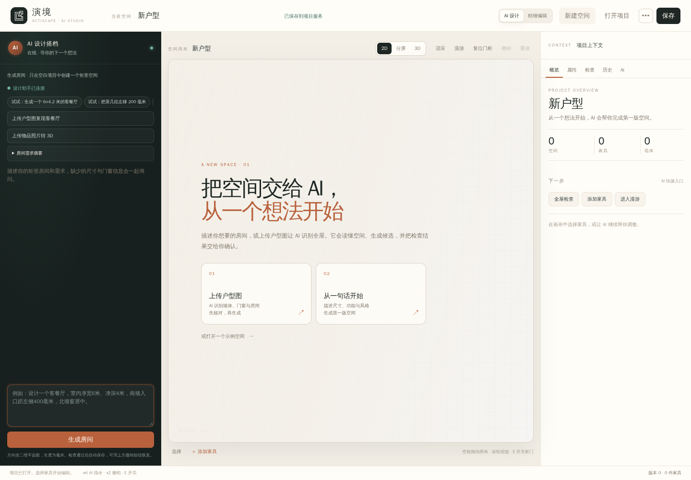
空项目 · AI 起点两种入口：上传户型图 / 从一句话开始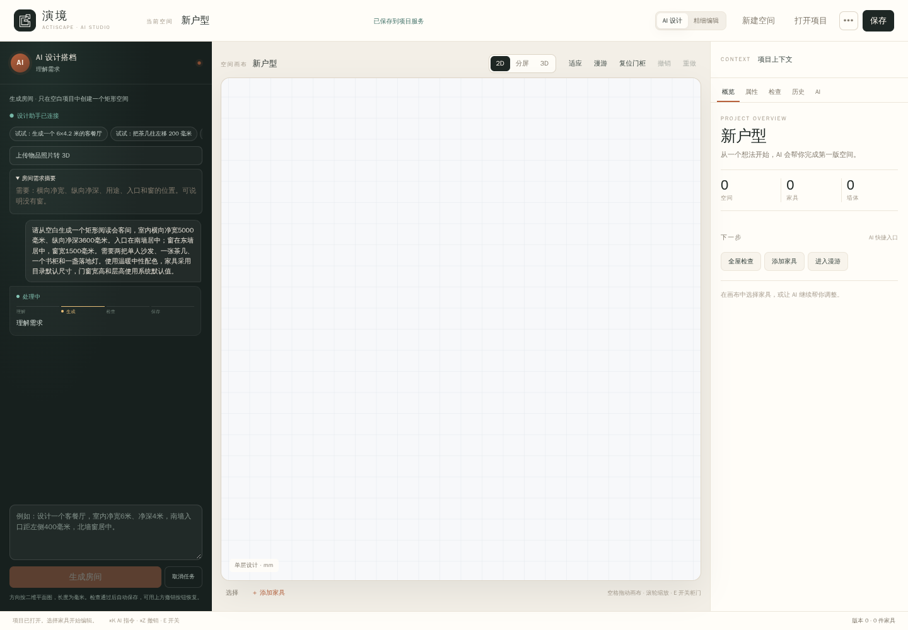
AI 正在构建阶段、工具动作与画布状态同步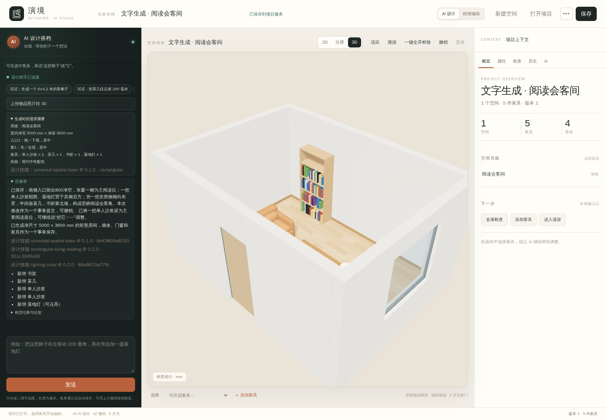
自然语言生成结果真实生成、检查通过、可继续编辑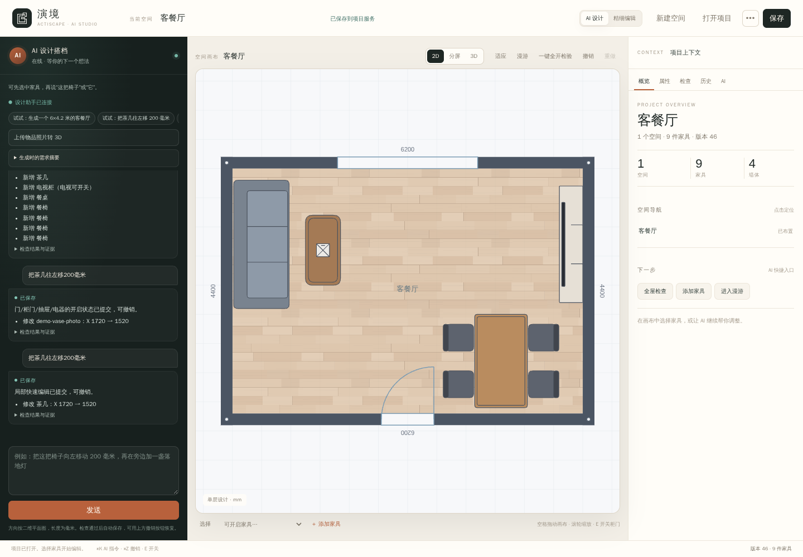
项目工作台AI 舱 / 空间画布 / 上下文三栏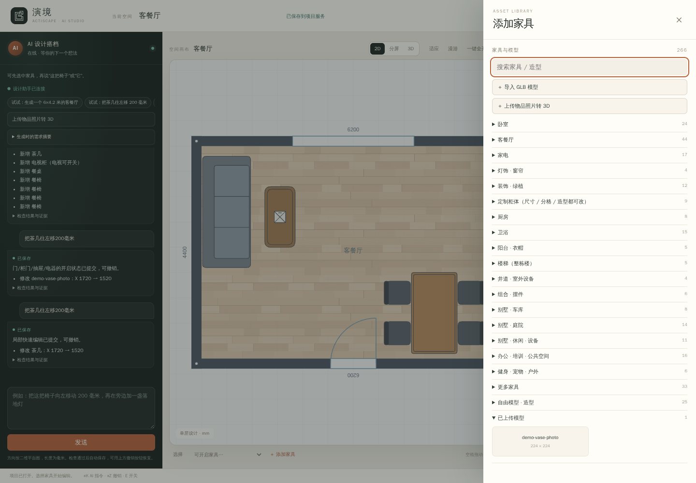
家具目录抽屉按需打开，不占画布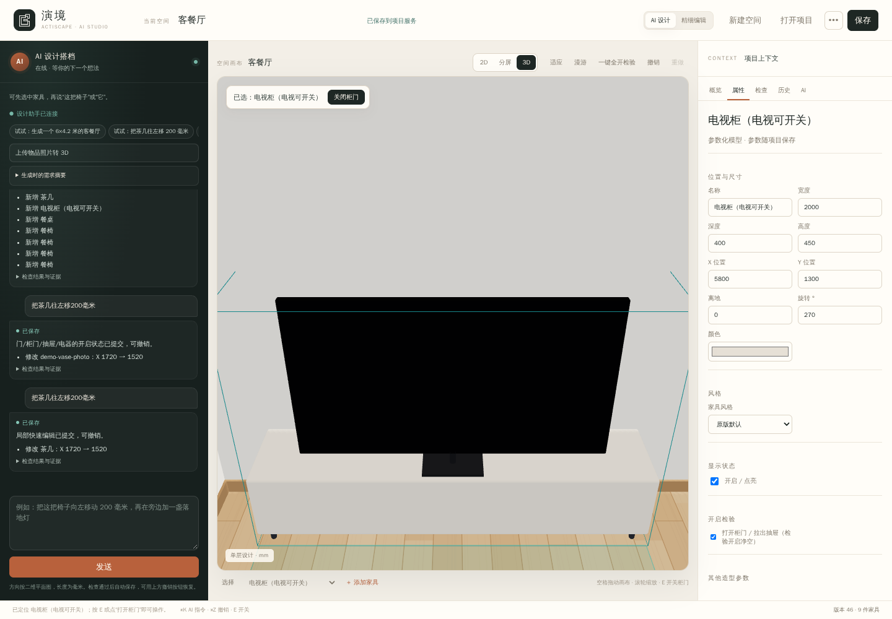
可开启家具操作定位、选中、打开柜门和包络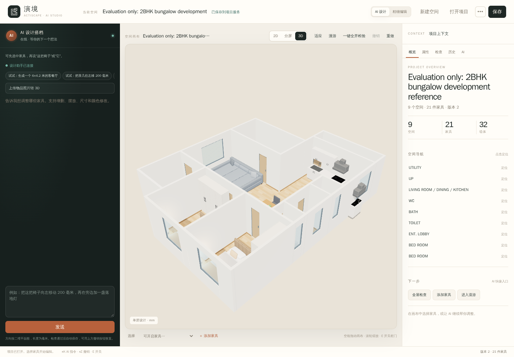
全屋 2BHK 浏览9 空间 / 21 家具 / 空间导航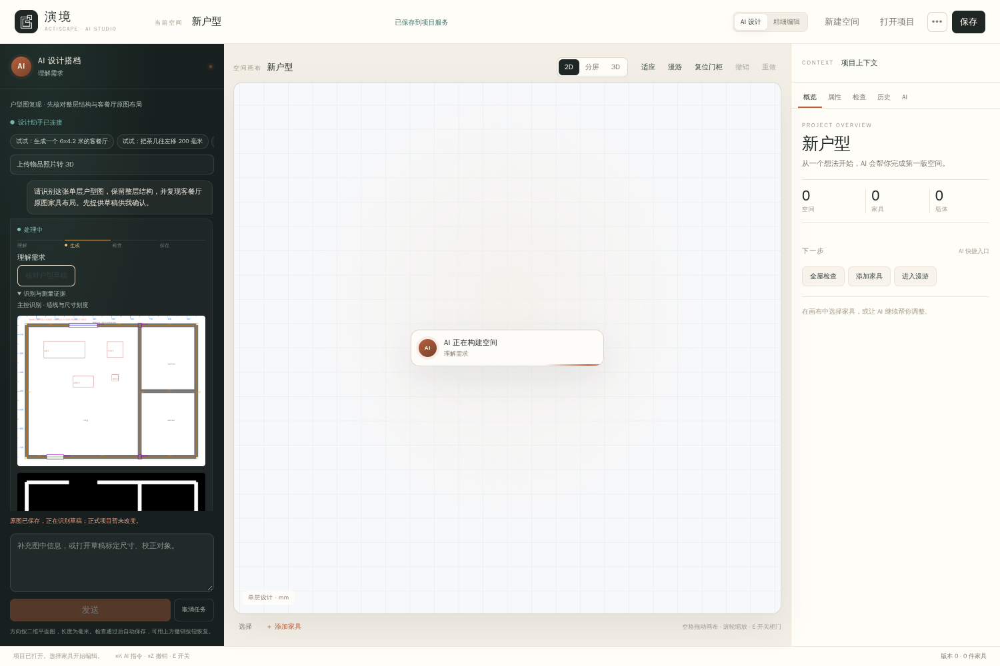
AI 户型图核对识别证据、原图对账、核对后生成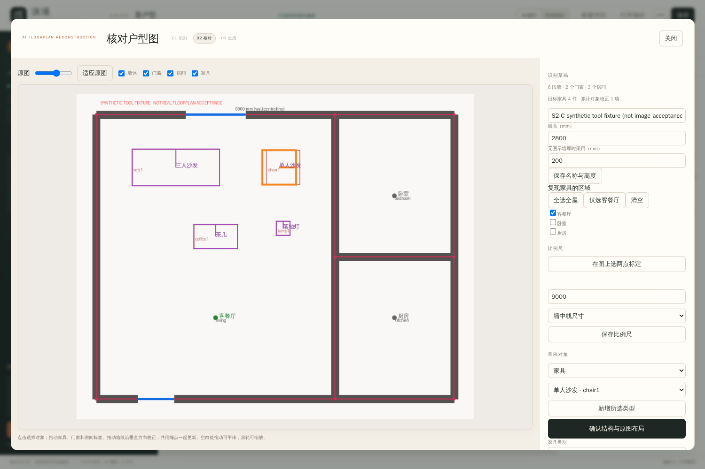
户型图核对台步骤、画布、AI 报告、确认动作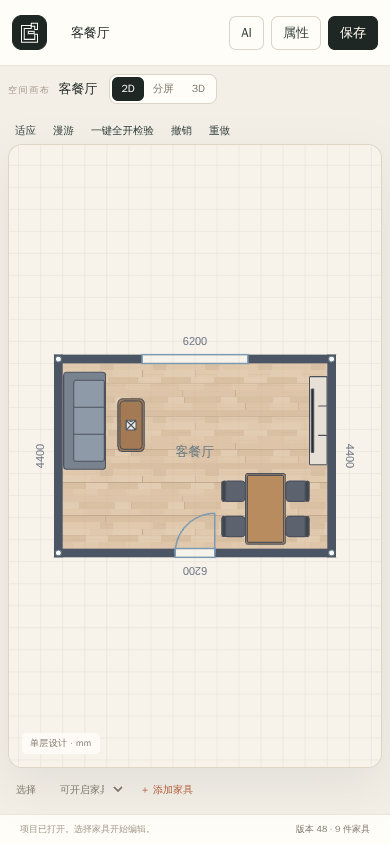
移动端画布关键视图与操作可达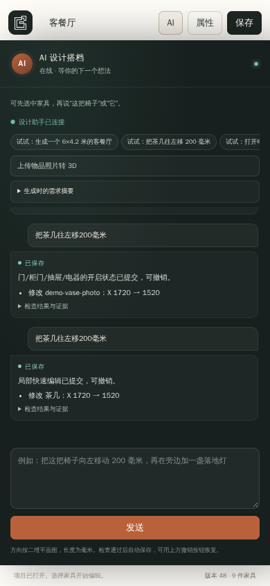
移动端 AI 舱全屏 AI 对话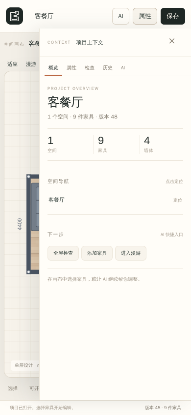
移动端上下文抽屉式属性与概览